Ideogram's first open-weight model is a 9.3B design-focused text-to-image
foundation model with a trick nobody else has: it speaks JSON. I ran it locally in
nf4 on one 24 GB RTX 4090 — this is the full tour: the architecture, both
quantization formats, all three quality modes, the caption schema with bounding-box layout
control, LLM-powered magic prompts, a 14-image style gallery with honest quality scores
(Arabic included — artifacts and all), and a 21-run speed benchmark.
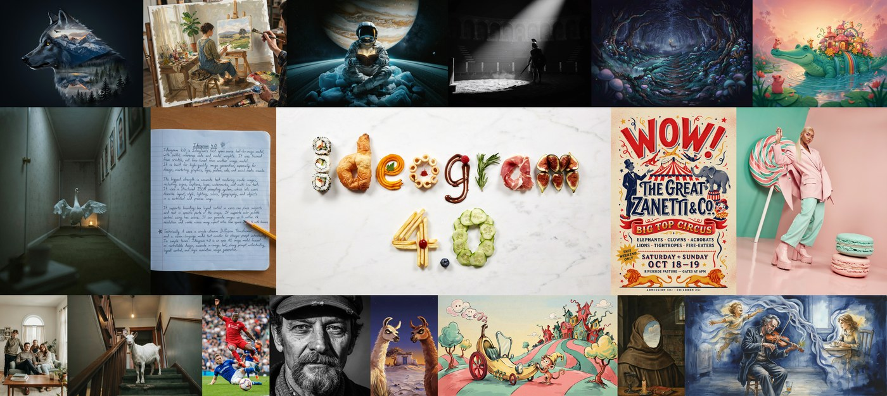
Ideogram 4 is a 9.3B from-scratch foundation model — a single-stream DiT with a Qwen3-VL text encoder — and the top open-weight image model on Design Arena. Its superpower is structured JSON prompting: exact text strings, hex palettes, and per-element bounding boxes that the model actually respects.
On a 24 GB 4090 in nf4: ~21 s per 1024² draft (Turbo), ~32 s
default, ~72 s top quality — and native 2048² fits at 23.3 GB peak with a
text-encoder offload. Time scales linearly with steps, super-linearly with pixels (4× area ≈ 6.3× time).
Quality across 14 styles averaged 8.6 / 10: photorealism and bbox-driven diagrams are superb; small-text labels wobble; Arabic body text garbles — keep Arabic short and display-sized.
Ideogram has been the "text-in-images" lab since its first model, and Ideogram 4 is its first open-weight release. It is not a fine-tune of an existing checkpoint — it's a 9.3B-parameter foundation model trained from scratch, aimed squarely at design work: typography, layout, posters, diagrams, brand color.
The receipts are public. On Design Arena's image Elo board it is the top-ranked open-weight model, trailing only proprietary GPT and Gemini image models; filtered to open weights it leads by a commanding margin. In ContraLabs' blind typography evaluation, ten professional designers picked it first 47.9% of the time — ahead of Nano Banana 2 (30.0%), FLUX.2 [max] (15.5%) and Grok Imagine (15.0%).
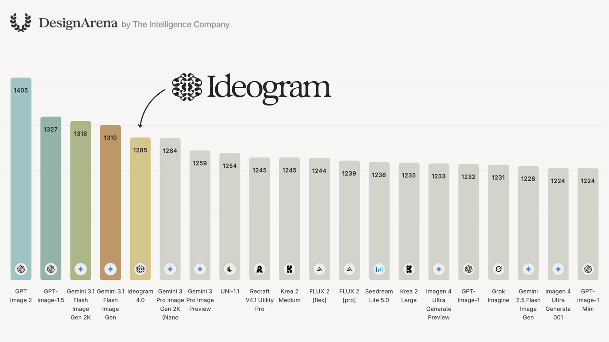
Parameter efficiency is the other headline: at 9.3B it beats much larger open models on text rendering — Qwen-Image (20B), FLUX.2 [dev] (32B), even HunyuanImage 3.0's 80B MoE.
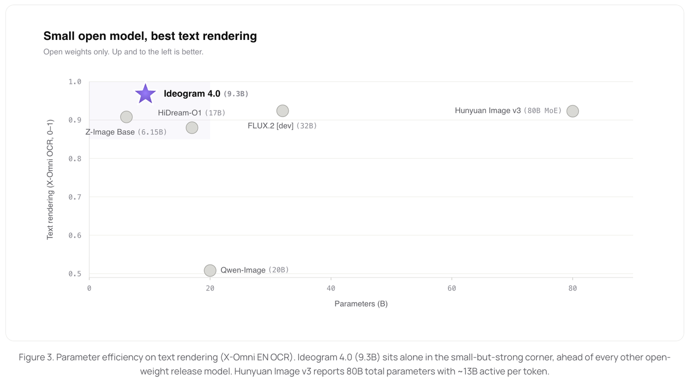
Three design decisions define the model. First, it's a fully single-stream Diffusion Transformer: text tokens and image latent tokens are concatenated into one sequence and processed by the same 34 layers — no separate branches, so text and pixels interact at every depth. Positioning uses 3D multimodal RoPE so both modalities share one coordinate space.
Second, the text encoder is not CLIP or T5 — it's Qwen3-VL-8B-Instruct, a full vision-language model run in text-only mode. Hidden states are extracted from 13 layers (0, 3, 6 … 35) and concatenated, handing the DiT a multi-scale representation from surface tokens to deep semantics. I suspect this is a big part of why JSON captions work so well: a VLM has seen structured descriptions of images.
Third, generation is flow matching: the network predicts a velocity field and an Euler sampler integrates from noise to image. Classifier-free guidance is dual-branch with two separate transformers — and the negative branch is asymmetric, processing image tokens only, which makes the unconditional pass cheaper than the conditional one.
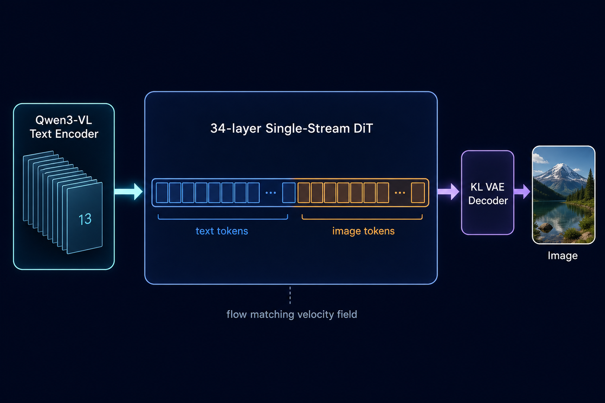
The weights ship in two quantizations on Hugging Face (gated — accept the license and set HF_TOKEN).
Everything in this article ran nf4.
| nf4 (what I use) | fp8 | |
|---|---|---|
| Encoding | bitsandbytes NormalFloat-4 | float8 e4m3, weight-only |
| Hardware | CUDA only | Any device — no FP8 hardware needed (activations stay bf16) |
| Resident VRAM | ~16 GB total (2 DiT branches + Qwen3-VL + VAE) | larger |
| Diffusers | Yes | No |
| Best for | 24 GB NVIDIA cards — the 4090 sweet spot | Mac / CPU fallback |
Sampling is controlled by named presets — same model, different step budgets. All three share one clever recipe: most steps run at guidance 7 for adherence, then the last few drop to guidance 3 — gentle "polish" passes that clean artifacts right before the image resolves.
| Preset | Steps | 1024² on the 4090 | Use for |
|---|---|---|---|
| V4_TURBO_12 | 12 | 20.9 s | Drafts, exploration |
| V4_DEFAULT_20 | 20 | 31.8 s | Daily work (this article's gallery) |
| V4_QUALITY_48 | 48 | 72.0 s | Finals, small typography |
The entire registry is ~25 lines of source — with one gotcha worth knowing:
# src/ideogram4/sampler_configs.py
# guidance_schedule is in loop-INDEX order:
# index 0 is the LAST (polish) step.
PRESETS = {
"V4_QUALITY_48": SamplerParameters(
num_steps=48,
guidance_schedule=(3.0,) * 3 + (7.0,) * 45,
mu=0.0, std=1.5,
),
"V4_DEFAULT_20": SamplerParameters(
num_steps=20,
guidance_schedule=(3.0,) * 2 + (7.0,) * 18,
mu=0.0, std=1.75,
),
"V4_TURBO_12": SamplerParameters(
num_steps=12,
guidance_schedule=(3.0,) * 1 + (7.0,) * 11,
mu=0.5, std=1.75,
),
}Ideogram 4 was trained on structured JSON captions, not free text. Plain sentences work, but a schema-compliant JSON object unlocks the controllability this model is famous for. Three top-level keys:
high_level_description — one summary sentence.style_description — aesthetics, lighting, medium, an optional hex
color_palette, and exactly one of photo (photographic) or
art_style (everything else).compositional_deconstruction — a background plus an elements list.
Each element is obj or text, with a description, an exact text string
when applicable, and an optional bbox as [ymin, xmin, ymax, xmax] in a
0–1000 space independent of output resolution.Here's a real caption from my library, and the image it produced — every service icon landed inside its declared box:
{
"high_level_description": "An AWS cloud architecture diagram of a serverless web application: users flow through CloudFront and API Gateway to Lambda functions and a DynamoDB table, with S3 for static assets.",
"style_description": {
"aesthetics": "official cloud documentation style, orderly, easy to scan",
"lighting": "flat diagram lighting with no shadows",
"medium": "vector architecture diagram",
"art_style": "AWS-style architecture diagram with orange and dark-blue service icons in rounded squares, a dashed cloud boundary box, thin grey connector arrows with small labels",
"color_palette": [
"#FFFFFF",
"#FF9900",
"#232F3E",
"#E8EAED",
"#527FFF"
]
},
"compositional_deconstruction": {
"background": "A white canvas containing one large dashed rounded rectangle labeled AWS Cloud occupying the right four-fifths of the frame, straight grey arrows connecting the services left to right, each arrow carrying a tiny request label.",
"elements": [
{
"type": "text",
"bbox": [
50,
300,
140,
700
],
"text": "Serverless Web Application",
"desc": "Dark slate sans-serif diagram title centered along the top edge."
},
{
"type": "obj",
"bbox": [
420,
30,
620,
150
],
"desc": "A user icon: a simple dark circle-and-shoulders pictogram above the label Users, placed outside the cloud boundary at the far left."
},
{
"type": "obj",
"bbox": [
400,
220,
640,
380
],
"desc": "An orange rounded-square AWS service icon with a globe-and-waves glyph labeled Amazon CloudFront."
},
{
"type": "obj",
"bbox": [
150,
430,
390,
590
],
"desc": "An orange rounded-square AWS service icon with a bucket glyph labeled Amazon S3 static assets, connected upward to CloudFront by a grey arrow."
},
{
"type": "obj",
"bbox": [
400,
450,
640,
610
],
"desc": "An orange rounded-square AWS service icon with a gateway glyph labeled Amazon API Gateway."
},
{
"type": "obj",
"bbox": [
400,
660,
640,
820
],
"desc": "An orange rounded-square AWS service icon with the lambda glyph labeled AWS Lambda, two small stacked copies suggesting multiple functions."
},
{
"type": "obj",
"bbox": [
650,
700,
890,
860
],
"desc": "A dark-blue rounded-square AWS service icon with a database table glyph labeled Amazon DynamoDB, connected from Lambda by a grey arrow."
}
]
}
}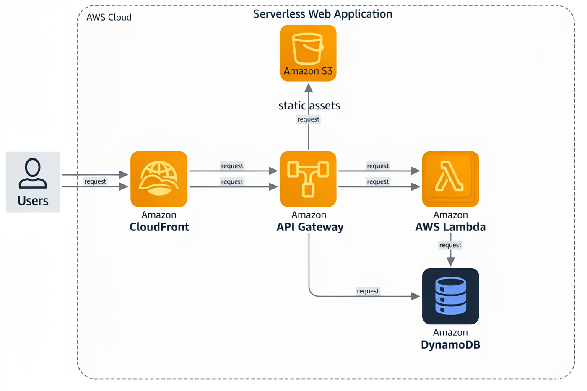
Hand-writing captions is powerful but slow, so the repo ships magic prompt: an LLM expands
your one-liner into a full schema-compliant caption, aspect-ratio aware. Backends: Ideogram's hosted endpoint
(free with an IDEOGRAM_API_KEY), Claude Opus/Sonnet via OpenRouter using the
open-source system prompt that ships in the repo, and a Gemini Flash-Lite backend I added —
fractions of a cent per expansion.
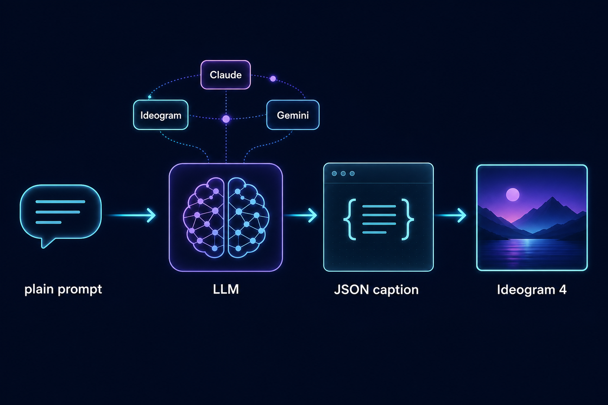
Input: "a ginger cat wearing a tiny wizard hat reading a spellbook"
Output (excerpt of ~3,000 chars):
{
"high_level_description": "A painterly children's-book illustration
of a ginger tabby cat in a pointed wizard hat studying an open
spellbook glowing with a cyan sigil by candlelight...",
"compositional_deconstruction": {
"background": "A cozy wizard's study at twilight... warm amber
light pools from the left where the candle burns, cool cyan
glow spills from the book toward the right...",
"elements": [
{"type": "obj", "desc": "Crystal ball on a carved wooden
pedestal, faint violet mist swirling inside..."},
{"type": "obj", "desc": "Ginger tabby cat on a crimson velvet
cushion... left side of face lit warm amber, right side
washed cool cyan from the sigil..."},
{"type": "text", "text": "INCANTATIO · III",
"desc": "Hand-lettered header on the open left page..."}
]
}
}I wrote a library of 14 hand-crafted JSON captions across every style I could think of and generated them all locally (V4_DEFAULT_20, seed 11). Each result below shows the source, the output, and an honest verdict. We start with photorealism.
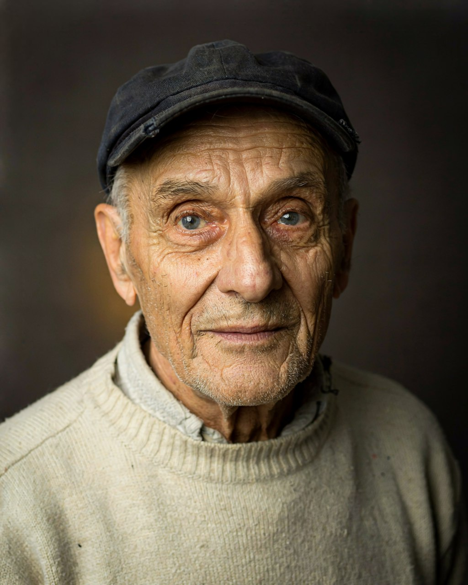
{
"high_level_description": "A tightly framed studio portrait photograph of an elderly Portuguese fisherman with deeply weathered skin, looking directly into the camera against a dark backdrop.",
"style_description": {
"aesthetics": "intimate, dignified, painterly realism",
"lighting": "single Rembrandt key light from the upper left, soft falloff, dark moody background",
"photo": "85mm portrait lens, f/2.0, shallow depth of field, eye-level, ultra-sharp focus on the eyes",
"medium": "photograph",
"color_palette": [
"#2B2420",
"#C8A172",
"#704C2E",
"#E8DCC8",
"#1A1714"
]
},
"compositional_deconstruction": {
"background": "A seamless charcoal-grey studio backdrop falling into near-black at the edges, with a faint warm gradient behind the subject's head.",
"elements": [
{
"type": "obj",
"desc": "An elderly man in his late seventies filling the frame from chest up. Deep wrinkles across his forehead and around pale blue eyes, white stubble on a sun-leathered face, a faded navy fisherman's cap pushed back on his head. He wears a coarse cream wool sweater with a rolled collar. His expression is calm and direct, the hint of a smile at the corner of his mouth."
}
]
}
}The portrait asked for a single Rembrandt key light, an 85mm f/2 look, the navy cap and cream wool sweater — and delivered pore-level skin detail, white stubble, and catchlights in pale blue eyes with zero uncanny artifacts. Only miss: the requested "hint of a smile" came out neutral. The snow leopard ran the full pipeline — one plain sentence → my Gemini backend → JSON → native 2048², no upscaler.
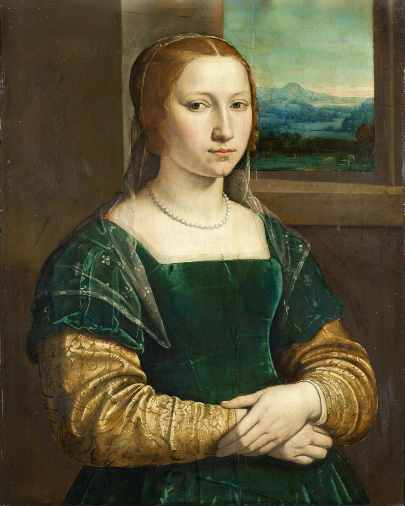
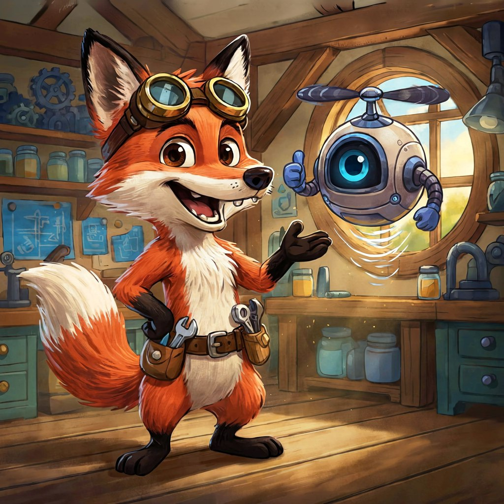
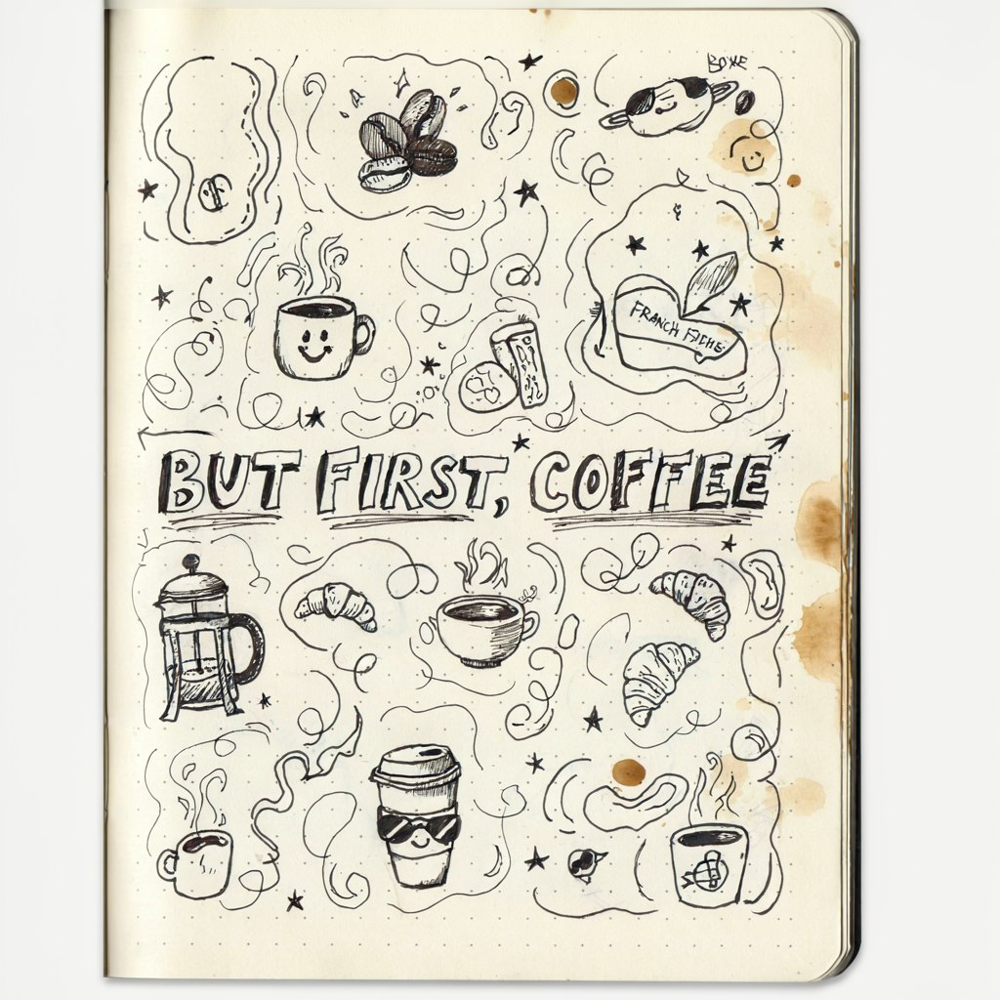
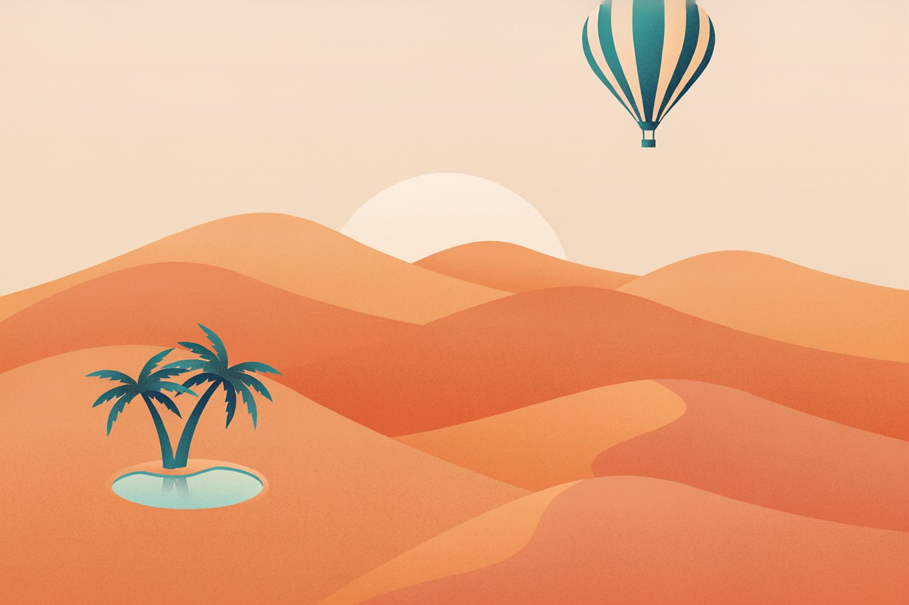
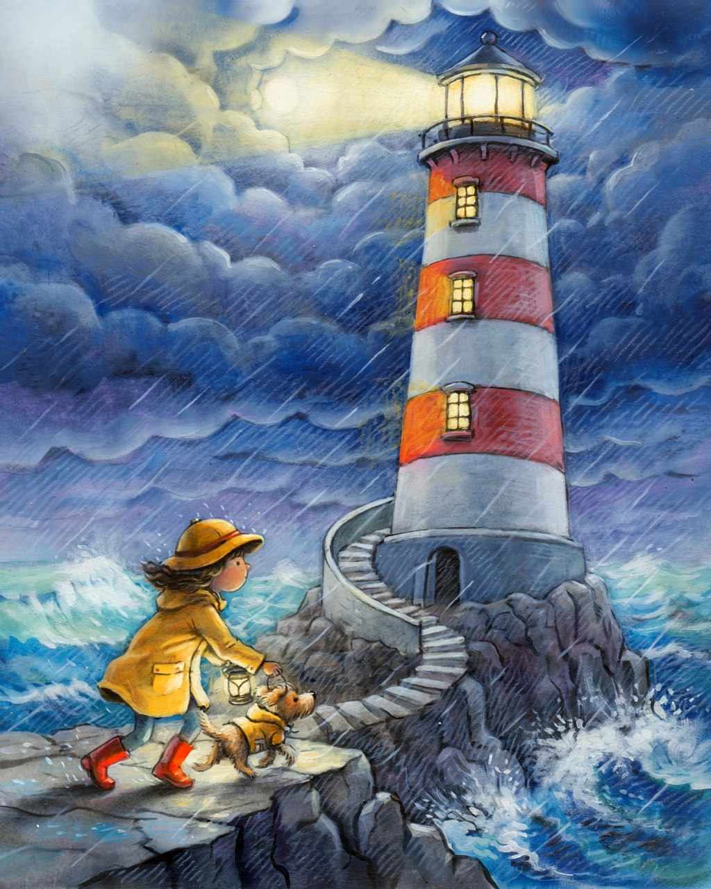
Switching photo → art_style turns the model into a painter with deep art-history
vocabulary: "sfumato blending, fine glazing layers, visible craquelure" produced exactly those. The one
interesting miss of the whole experiment is the fox: every prop arrived (goggles, tool belt, one-eyed robot)
but the requested flat TV-cartoon cel shading drifted toward painterly storybook. Style adherence is strong but
not absolute — register can drift toward the model's design-forward house taste.
This is where bounding boxes earn their keep — and where the model's one systematic weakness shows. Structure: flawless. Small labels: occasionally wobbly.
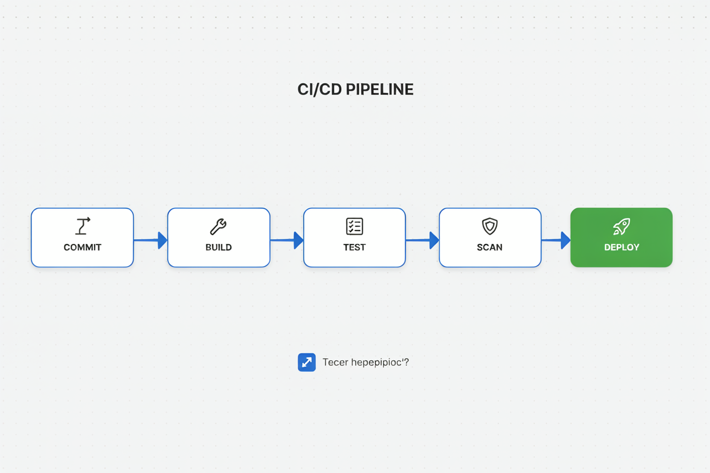
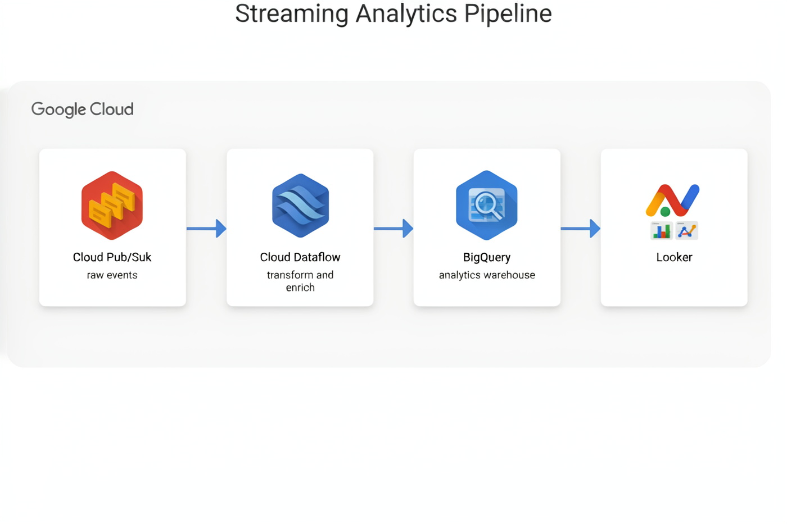
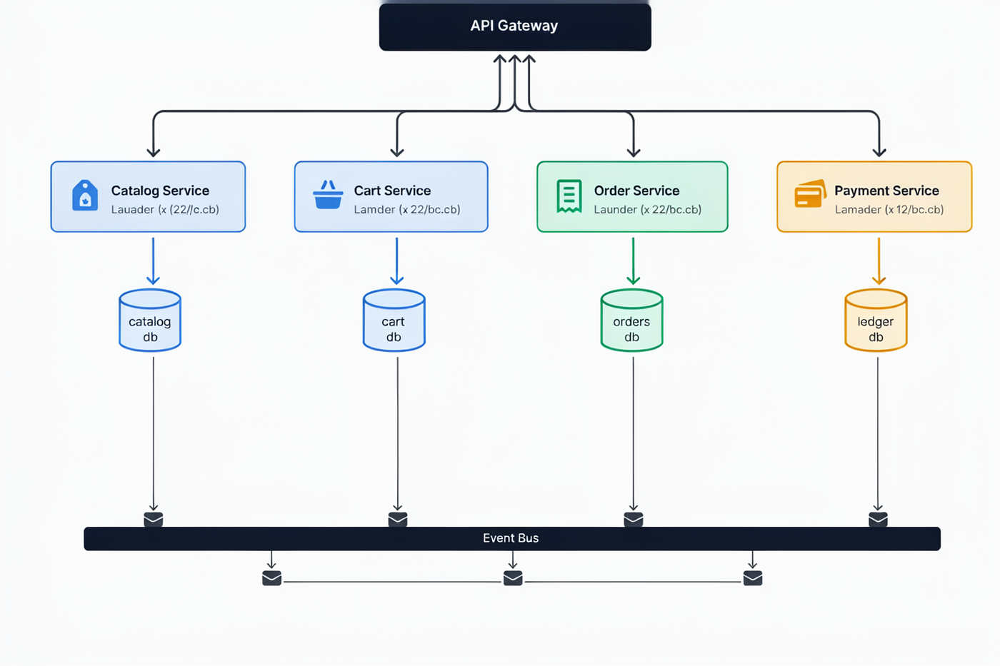
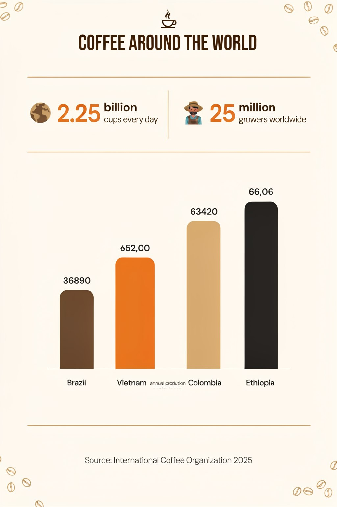
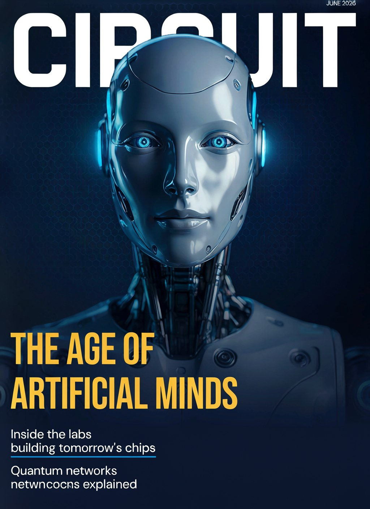
The infographic delivered its headline, both stat callouts (2.25 billion cups / 25 million growers), the ascending bars, and the source credit — but the numbers inside the chart corrupted ("652,00"). Lesson: words render better than digits. The magazine cover is near print-ready; I asked for the robot's head to partially overlap the masthead for depth and got exactly that layering. One small teaser line wobbled.
I saved Arabic for last deliberately, because the story is mixed and worth telling straight. Structurally these are impressive: the infographic flows right-to-left as Arabic must, text blocks are right-aligned, the three tip cards sit on their bounding boxes, and it even used proper Arabic-Indic numerals (١ ٢ ٣). The magazine's Andalusian-gate photography is stunning and the gold-on-green palette followed my hex codes exactly.
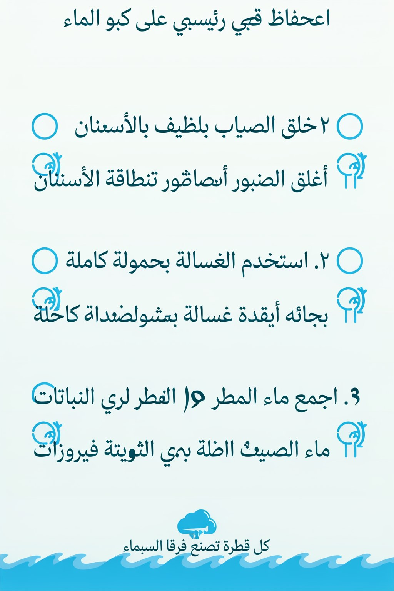
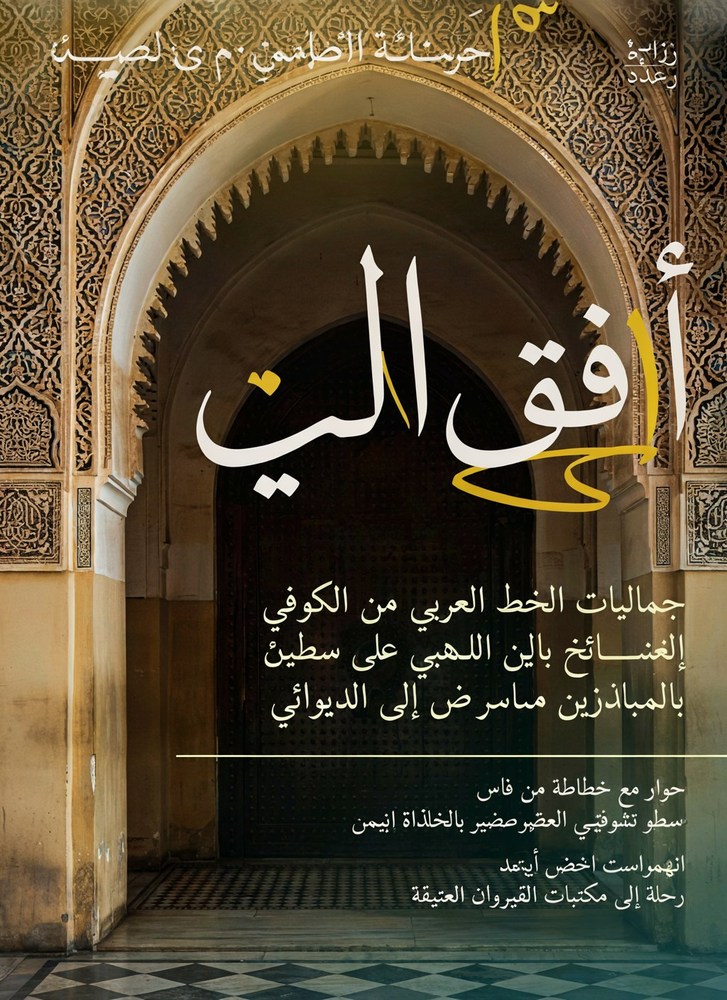
{
"high_level_description": "انفوجرافيك عربي عمودي بعنوان الحفاظ على الماء يعرض ثلاث نصائح مرقمة مع أيقونات، بتخطيط من اليمين إلى اليسار وخط عربي حديث.",
"style_description": {
"aesthetics": "نظيف وهادئ بأسلوب تحريري عربي معاصر",
"lighting": "إضاءة مسطحة مناسبة للطباعة",
"medium": "vector infographic",
"art_style": "تصميم مسطح حديث بأيقونات هندسية بسيطة وخط نسخ عربي واضح مع محاذاة يمينية كاملة",
"color_palette": [
"#EAF6F6",
"#0E7490",
"#22D3EE",
"#155E75",
"#FFFFFF"
]
},
"compositional_deconstruction": {
"background": "خلفية فيروزية فاتحة عمودية مقسومة إلى شريط عنوان علوي وثلاث بطاقات بيضاء مستديرة الزوايا مرتبة عموديًا، مع موجات مائية رقيقة في أسفل التصميم.",
"elements": [
{
"type": "text",
"bbox": [
50,
150,
170,
850
],
"text": "الحفاظ على الماء",
"desc": "عنوان رئيسي كبير بخط عربي عريض باللون الأزرق الداكن في وسط الشريط العلوي، تحته قطرة ماء مرسومة ببساطة."
},
{
"type": "text",
"bbox": [
240,
100,
400,
900
],
"text": "١. أغلق الصنبور أثناء تنظيف الأسنان",
"desc": "البطاقة الأولى: نص النصيحة بمحاذاة اليمين وبجانبه من جهة اليمين أيقونة صنبور مغلق داخل دائرة فيروزية."
},
{
"type": "text",
"bbox": [
440,
100,
600,
900
],
"text": "٢. استخدم الغسالة بحمولة كاملة",
"desc": "البطاقة الثانية: نص النصيحة بمحاذاة اليمين وبجانبه أيقونة غسالة ملابس داخل دائرة فيروزية."
},
{
"type": "text",
"bbox": [
640,
100,
800,
900
],
"text": "٣. اجمع ماء المطر لري النباتات",
"desc": "البطاقة الثالثة: نص النصيحة بمحاذاة اليمين وبجانبه أيقونة سحابة مطر فوق نبتة داخل دائرة فيروزية."
},
{
"type": "text",
"bbox": [
870,
250,
950,
750
],
"text": "كل قطرة تصنع فرقًا",
"desc": "شعار ختامي صغير بخط رفيع في أسفل التصميم فوق الموجات المائية."
}
]
}
}Each generation scored on four axes: adherence (did everything in the caption appear?), layout (were bboxes respected?), text (fidelity of rendered strings) and craft (quality of the medium itself). Set average: 8.6 / 10.
| Example | Adherence | Layout | Text | Craft | Overall |
|---|---|---|---|---|---|
| Fisherman portrait | 9.5 | 9 | — | 10 | 9.5 |
| Renaissance oil | 9.5 | 9.5 | — | 10 | 9.5 |
| Storybook lighthouse | 10 | 9.5 | — | 10 | 9.5 |
| AWS architecture | 9.5 | 9.5 | 9 | 9.5 | 9.5 |
| Coffee doodles | 9.5 | 9 | 9.5 | 9 | 9 |
| Vector dunes | 9.5 | 8.5 | — | 9.5 | 9 |
| Tech magazine (EN) | 9.5 | 9.5 | 8.5 | 9.5 | 9 |
| Cartoon fox | 9 | 8.5 | — | 9 | 8.5 |
| CI/CD flowchart | 9 | 9.5 | 8 | 9 | 8.5 |
| GCP pipeline | 9 | 9.5 | 7 | 9 | 8.5 |
| Microservices | 9 | 9.5 | 7.5 | 9 | 8.5 |
| Coffee infographic (EN) | 9 | 9 | 7.5 | 9 | 8.5 |
| Culture magazine (AR) | 8.5 | 9 | 5 | 9.5 | 7 |
| Water infographic (AR) | 7.5 | 8.5 | 4.5 | 7.5 | 6.5 |
"text"
fields, keep elements ≤ 5 per image, prefer round numbers in charts — and step up to
V4_QUALITY_48 for typography-critical finals.
Three presets × seven aspect ratios, fixed JSON caption and seed, one warmup excluded,
torch.cuda.synchronize() around every run. Each timing is the complete pipeline: text encode,
all sampling steps, VAE decode.
| Aspect ratio | Resolution | Turbo (12) | Default (20) | Quality (48) | Peak VRAM |
|---|---|---|---|---|---|
| 1:1 | 1024×1024 | 20.9 s | 31.8 s | 72.0 s | 17.9 GB |
| 1:1 hi-res | 2048×2048 | 121.6 s | 199.7 s | 462.0 s | 23.3 GB |
| 3:2 | 1536×1024 | 31.7 s | 51.2 s | 120.2 s | 18.8 GB |
| 2:3 | 1024×1536 | 32.2 s | 51.1 s | 119.4 s | 18.8 GB |
| 16:9 | 1920×1088 | 45.3 s | 73.4 s | 172.6 s | 19.6 GB |
| 9:16 | 1088×1920 | 45.3 s | 73.5 s | 173.3 s | 19.6 GB |
| 4:1 banner | 1600×400 | 12.2 s | 18.7 s | 42.3 s | 17.2 GB |
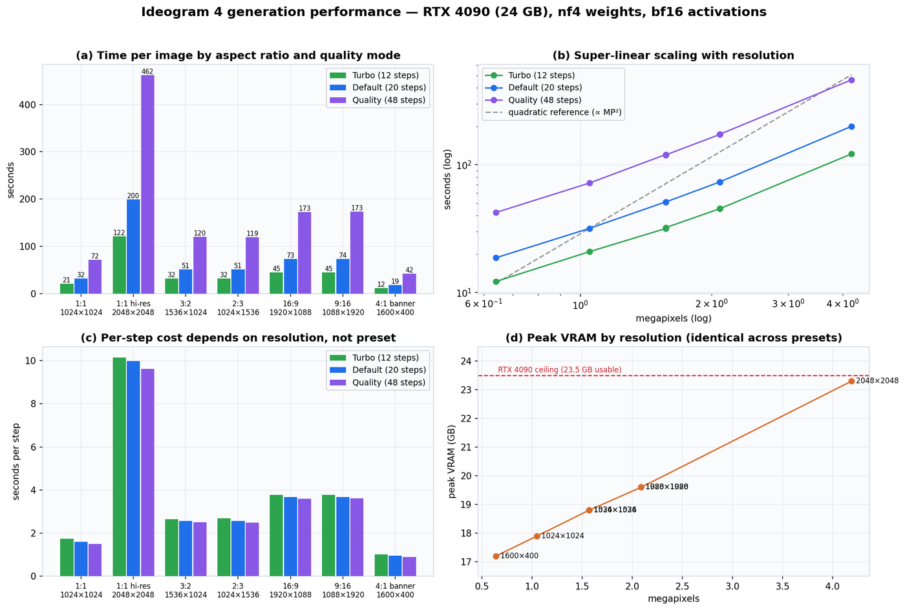
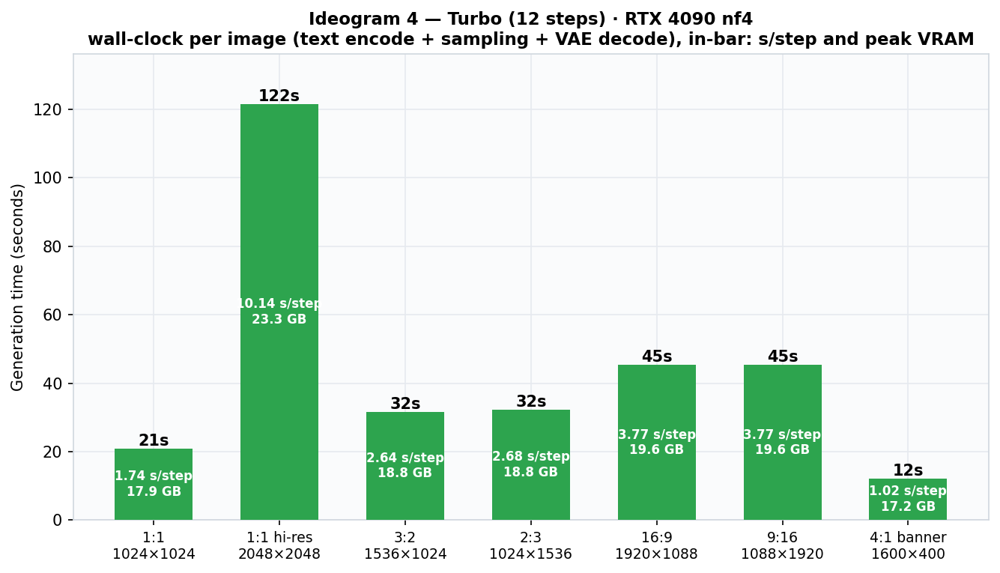
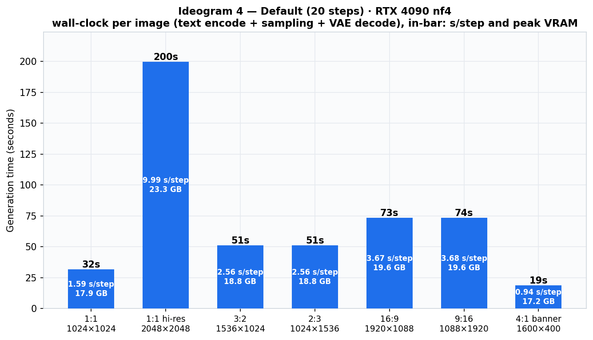
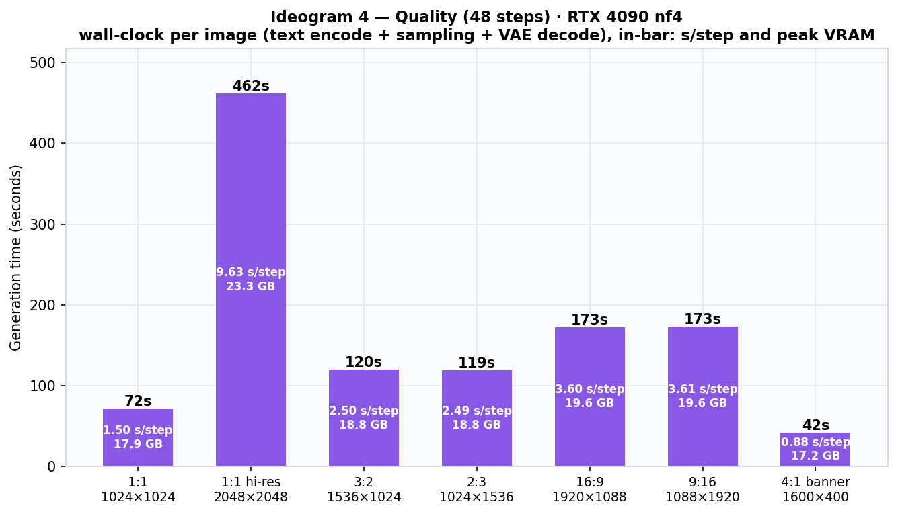
The practical recipe: draft in Turbo at 1024², work in Default at ≤ 2 MP, and reserve hi-res Quality renders for finals (and a coffee break).
ideogram-oss/ideogram4 — inference code, prompting guide, the open-source magic-prompt system prompt.ideogram-ai/ideogram-4-nf4 and ideogram-4-fp8 — gated weights (~16 GB, bundles both DiT branches + Qwen3-VL + VAE).